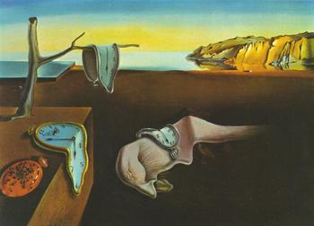

Сальвадор Далі
Створив «параноїдально-критичний метод»: вдивлявся у власні марення й перетворював їх на точні, майже фотографічні сцени. М’які годинники з картини «Постійність пам’яті» (1931) стали символом усього напрямку.
Читати про митця